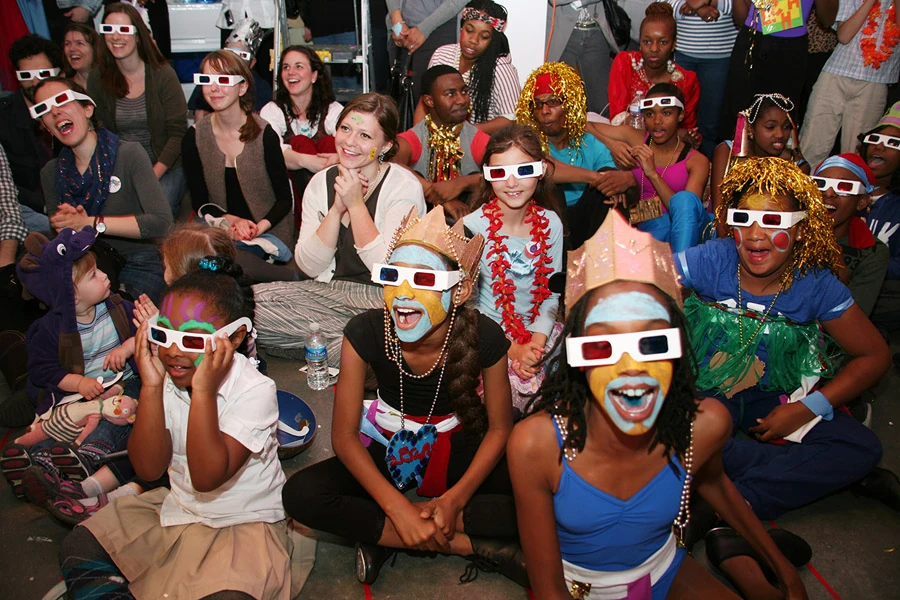
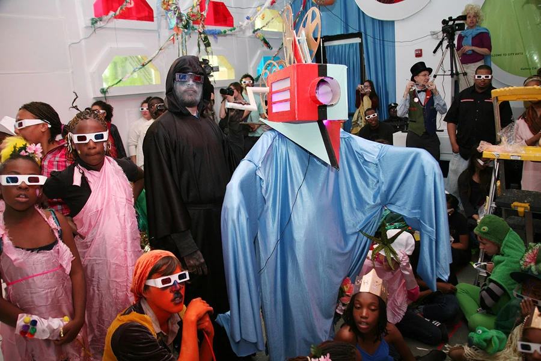

Whoop Dee Doo / Baltimore
Baltimore show
A set becomes a gathering.
Selected show documentation. Further project details and credits to follow.
A Whoop Dee Doo show in Baltimore. These three photographs move from the constructed set and performance to the audience, then back into the shared room. Roger Link appears in black in the final photograph.




